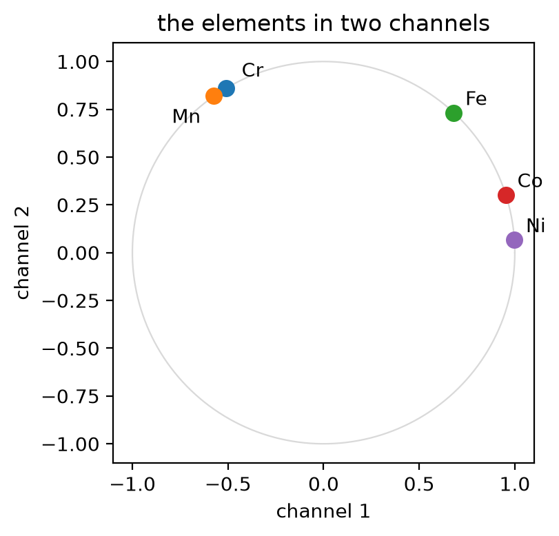
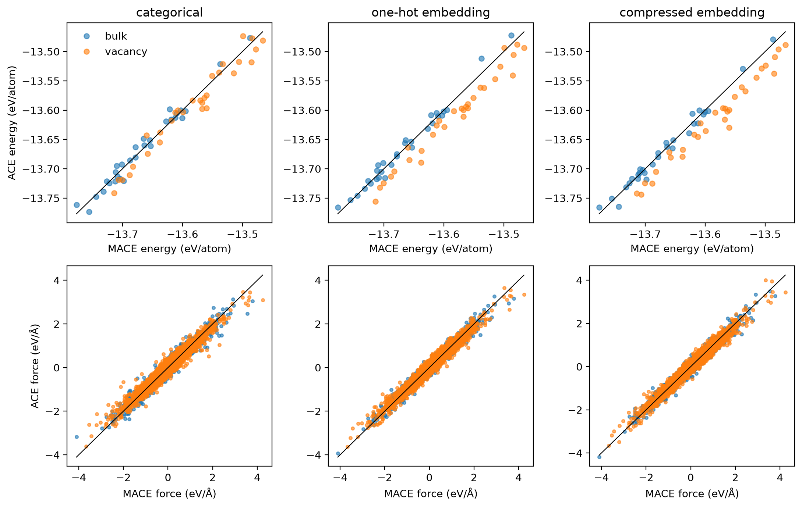

Tutorial 3: multi-element fits, categorical and embedded species¶
An ACE basis for one element is a set of functions of the neighbour positions. With several elements it must also say which element each neighbour is, and there are two ways to do that. The categorical basis gives every element its own channel, so its size grows quickly with the number of elements. The species-embedding basis describes each element by a few numbers and lets all elements share the same channels. This notebook fits both to the five-element CrMnFeCoNi (Cantor) alloy and compares them.
Goals
- Read a multi-element dataset and check its composition.
- Build a categorical basis and see how its size grows with the number of elements.
- Build species-embedding bases: a one-hot embedding that keeps every element distinct, and a compressed one that describes the elements by two channels.
- Fit all three with the evidence fit, and compare basis size, fit time, test errors and parity plots, in bulk and around a vacancy.
- Refit with a quarter of the data, and decide when each basis wins.
Work through Tutorial 1 first; this one uses the same fit and explains only what is new for several elements.
Run this notebook. Install uv. Then run this command:
uvx marimo edit --sandbox https://raw.githubusercontent.com/ACEsuit/ace-jax/main/docs/user/tutorials/notebooks/multi_element.py
The notebook opens in your browser. You do not need an account. You can also open the notebook in molab, the marimo hosted service. You must sign in to run it there.
This website shows a static copy of the notebook, run on a CPU when the site was built. The interactive controls show their default values. Run time: approximately 3 minutes on a CPU. Most of this time is for the six fits.
import json
import pathlib
import time
import urllib.request
from collections import Counter
import jax
jax.config.update("jax_enable_x64", True) # fitting needs float64
import marimo as mo
import matplotlib.pyplot as plt
import numpy as np
from ase.io import read, write
from ace_jax import ACECalculator
from ace_jax.basis.model import BasisSpec, build_basis
Step 1: the data¶
The Cantor alloy is a random face-centred-cubic solid solution of Cr, Mn,
Fe, Co and Ni. The data are small subsets included with ace-jax
(data README),
labelled by the MACE-MH-1 foundation model and stored under mace_energy,
mace_force and mace_virial:
- training set: 40 strained and rattled bulk cells of 32 atoms;
- test set: 30 more bulk cells from the same distribution (
config_type=bulk), plus 30 cells of 47 atoms, each a 48-atom cell with one atom removed and not relaxed (config_type=vacancy). The training set has no vacancies.
The cell below uses the copies in your ace-jax checkout if this notebook is run from one, and otherwise downloads them from GitHub.
work = pathlib.Path("ace_jax_tutorial_3")
work.mkdir(exist_ok=True)
URL = "https://raw.githubusercontent.com/ACEsuit/ace-jax/main/docs/user/tutorials/data/cantor/"
_here = mo.notebook_dir() / "../data/cantor" if mo.notebook_dir() else None
for _name in ("cantor_train.xyz", "cantor_test.xyz", "cantor_vacancy.xyz"):
_local = _here / _name if _here is not None else None
if _local is not None and _local.exists():
(work / _name).write_bytes(_local.read_bytes())
elif not (work / _name).exists():
urllib.request.urlretrieve(URL + _name, work / _name)
train_frames = read(work / "cantor_train.xyz", ":")
_bulk, _vac = read(work / "cantor_test.xyz", ":"), read(work / "cantor_vacancy.xyz", ":")
for _a in train_frames + _bulk:
_a.info["config_type"] = "bulk"
for _a in _vac:
_a.info["config_type"] = "vacancy"
test_frames = _bulk + _vac
train_file, test_file = work / "train.xyz", work / "test.xyz"
write(train_file, train_frames)
write(test_file, test_frames)
keys = dict(energy_key="mace_energy", force_key="mace_force", virial_key="mace_virial")
elements = ("Cr", "Mn", "Fe", "Co", "Ni")
_counts = np.array([[Counter(a.get_chemical_symbols())[e] for e in elements] for a in train_frames])
_frac = _counts / _counts.sum(axis=1, keepdims=True)
composition = {e: (_counts[:, i].sum(), _frac[:, i].min(), _frac[:, i].max())
for i, e in enumerate(elements)}
mo.md(
"| element | atoms in the training set | share of the atoms | share per cell (min to max) |\n"
"|---|---|---|---|\n"
+ "\n".join(f"| {e} | {n} | {n / _counts.sum():.1%} | {lo:.0%} to {hi:.0%} |"
for e, (n, lo, hi) in composition.items())
+ f"\n\n**{len(train_frames)}** training cells, **{_counts.sum()}** atoms, "
f"about {_counts.sum() // len(elements)} atoms of each element."
)
| element | atoms in the training set | share of the atoms | share per cell (min to max) |
|---|---|---|---|
| Cr | 320 | 19.8% | 19% to 23% |
| Mn | 322 | 19.9% | 19% to 25% |
| Fe | 331 | 20.5% | 19% to 25% |
| Co | 323 | 20.0% | 19% to 23% |
| Ni | 320 | 19.8% | 19% to 22% |
40 training cells, 1616 atoms, about 323 atoms of each element.
Checkpoint 1 passed: five elements in near-equal amounts in 40 training cells, and a test set of bulk and vacancy cells.
Every cell is close to equiatomic: each element makes up 20% of the atoms, and no cell strays far from that. Keep this in mind for Step 6: these data can say how well a basis interpolates between near-equiatomic cells, but not how it transfers to compositions it has not seen.
Step 2: the categorical basis¶
An ACE basis function couples the radial and angular functions of up to
order neighbours. In the categorical basis the radial functions
\(R_{nl}(r, Z_i, Z_j)\) carry the element of the centre atom, \(Z_i\), and of
the neighbour, \(Z_j\), so each neighbour slot of a basis function also picks
an element. A function of order \(\nu\) then comes in a copy for every
unordered choice of \(\nu\) neighbour elements, and every centre element has
its own coefficients. With \(S\) elements the number of coefficients grows
roughly like \(S^{\nu+1}\).
This is the default: aj fit --order 2 --max-degree 4 with five elements in
the data builds it. The table counts the coefficients (many-body plus pair,
for every centre element) as elements are added, at the settings used in
this notebook (order 2, degree 4) and at order 3.
growth = {}
for _order in (2, 3):
for _n in range(1, 6):
_b = build_basis(BasisSpec(order=_order, max_degree=4, elements=elements[:_n], rcut=5.5))
growth[_order, _n] = _b.meta["len_basis"]
mo.md(
"| elements | " + " | ".join(",".join(elements[:n]) for n in range(1, 6)) + " |\n"
"|---|" + "---|" * 5 + "\n"
+ "\n".join(f"| order {o}, degree 4 | " + " | ".join(str(growth[o, n]) for n in range(1, 6)) + " |"
for o in (2, 3))
)
| elements | Cr | Cr,Mn | Cr,Mn,Fe | Cr,Mn,Fe,Co | Cr,Mn,Fe,Co,Ni |
|---|---|---|---|---|---|
| order 2, degree 4 | 12 | 58 | 162 | 352 | 650 |
| order 3, degree 4 | 14 | 90 | 324 | 856 | 1870 |
Checkpoint 2 passed: five elements need 54 times the coefficients of one at order 2, and 134 times at order 3: far faster than the number of elements.
Step 3: species embeddings¶
The species-embedding basis replaces the element label of a neighbour by a short vector, its embedding \(e_k(Z_j)\), \(k = 1, \dots, d\). The radial functions become products,
so a basis function sees \(d\) species channels in place of \(S\) elements. Two elements with similar embeddings look similar to every basis function, and the coefficients of a channel are shared by all elements. The centre element still has its own coefficients. The embedding is fixed when the basis is built (it is not fitted), so the model stays linear.
With \(d\) as large as all the element combinations need (d_max=None, the
default) the embedding loses nothing. An identity table, one row per
element (embedding="identity"), keeps every element distinct, so this
one-hot embedding basis holds the same species information as the
categorical basis, in a different construction. With a small d_max and
a table that says how the elements resemble each other, the embedding
compresses the elements into a few channels.
The table can come from anywhere: the element embedding of a foundation
model such as MACE is one choice. Here it is three columns everyone can
check: a constant (every neighbour is a 3d transition metal), the number
of valence electrons and the Pauling electronegativity, each shifted and
scaled to mean 0 and spread 1 over the five elements. ace-jax normalises
each row and keeps its d_max leading principal components. The table is
a JSON file with the atomic numbers Z and the rows emb.
from ase.data import atomic_numbers
_valence = [6, 7, 8, 9, 10] # 3d + 4s electrons
_pauling = [1.66, 1.55, 1.83, 1.88, 1.91] # Pauling electronegativity
_props = np.array([_valence, _pauling], float).T
_std = (_props - _props.mean(axis=0)) / _props.std(axis=0)
table = np.hstack([np.ones((5, 1)), _std])
Z = [atomic_numbers[e] for e in elements]
table_file = work / "elements.json"
table_file.write_text(json.dumps({"Z": Z, "emb": table.round(6).tolist()}))
mo.md("| element | constant | valence electrons (scaled) | electronegativity (scaled) |\n|---|---|---|---|\n"
+ "\n".join(f"| {e} | {r[0]:.0f} | {r[1]:+.2f} | {r[2]:+.2f} |" for e, r in zip(elements, table))
+ f"\n\nWritten to `{table_file}`.")
| element | constant | valence electrons (scaled) | electronegativity (scaled) |
|---|---|---|---|
| Cr | 1 | -1.41 | -0.77 |
| Mn | 1 | -0.71 | -1.56 |
| Fe | 1 | +0.00 | +0.46 |
| Co | 1 | +0.71 | +0.82 |
| Ni | 1 | +1.41 | +1.04 |
Written to ace_jax_tutorial_3/elements.json.
from ace_jax.basis.embedding import embedding_rows
_rows = embedding_rows(table, Z, Z, d=2) # what d_max=2 keeps, rows normalised
_fig, _ax = plt.subplots(figsize=(4.2, 4))
_t = np.linspace(0, 2 * np.pi, 200)
_ax.plot(np.cos(_t), np.sin(_t), "-", c="0.85", lw=0.8)
_offset = {"Cr": (8, 6), "Mn": (-22, -14)} # Cr and Mn nearly coincide
for _e, (_x, _y) in zip(elements, _rows):
_ax.plot(_x, _y, "o", ms=8)
_ax.annotate(_e, (_x, _y), textcoords="offset points", xytext=_offset.get(_e, (6, 4)))
_ax.set_aspect("equal"); _ax.set_xlabel("channel 1"); _ax.set_ylabel("channel 2")
_ax.set_title("the elements in two channels")
_fig.tight_layout()
_fig

In two channels the five elements sit on a circle (each row has unit length): Cr and Mn almost on top of each other, Co and Ni close together on the other side, and Fe in between. Every basis function now sees a neighbour's element as a point on this circle, so it barely tells Cr from Mn. Choose the number of channels of the compressed basis below (exercise 1 tries the others), then build the three bases. All use correlation order 2, degree 4 and the same cutoff, 5.5 Å.
Interactive controls in the notebook (this page shows their defaults): channels d_max = 2
specs = {
"categorical": BasisSpec(order=2, max_degree=4, elements=elements, rcut=5.5),
"one-hot embedding": BasisSpec(order=2, max_degree=4, elements=elements, rcut=5.5,
embedding="identity"),
"compressed embedding": BasisSpec(order=2, max_degree=4, elements=elements, rcut=5.5,
embedding=str(table_file), d_max=int(d_max.value)),
}
bases = {k: build_basis(s) for k, s in specs.items()}
mo.md("| basis | many-body functions per element | pair functions per element | coefficients |\n"
"|---|---|---|---|\n"
+ "\n".join(f"| {k} | {b.meta['n_B']} | {b.meta['n_pair']} | **{b.meta['len_basis']}** |"
for k, b in bases.items()))
| basis | many-body functions per element | pair functions per element | coefficients |
|---|---|---|---|
| categorical | 126 | 4 | 650 |
| one-hot embedding | 125 | 20 | 725 |
| compressed embedding | 22 | 20 | 210 |
Checkpoint 3 passed: the one-hot embedding is about as large as the categorical basis (725 against 650 coefficients); the compressed one has 32% of them.
The two embedding bases differ from the categorical one in more than the species: they are built like the ACE1 models of ACEpotentials, with different radial polynomials, and with a pair potential that resolves the neighbour's element (note the pair functions per element in the table). The one-hot embedding is the control: it has the species information of the categorical basis and the construction of the compressed one, so comparing the three separates the effect of the construction from the effect of compressing the elements.
Step 4: fit all three¶
The fit is the evidence fit of Tutorial 1, the same for every basis: energies, forces and virials, noise levels and prior chosen by maximising the evidence, reference energies E0 fitted with the model. The test set holds both config types, so the fit reports its errors per type.
The command-line equivalents, with the files this notebook writes to
ace_jax_tutorial_3/, are
aj fit --order 2 --max-degree 4 --rcut 5.5 --train train.xyz --test test.xyz \
--energy-key mace_energy --force-key mace_force --virial-key mace_virial \
--e0 lsq --opt lbfgs --out fit_categorical
aj fit --order 2 --max-degree 4 --rcut 5.5 --basis-embedding identity \
--train train.xyz --test test.xyz \
--energy-key mace_energy --force-key mace_force --virial-key mace_virial \
--e0 lsq --opt lbfgs --out fit_onehot
aj fit --order 2 --max-degree 4 --rcut 5.5 --basis-embedding elements.json --d-max 2 \
--train train.xyz --test test.xyz \
--energy-key mace_energy --force-key mace_force --virial-key mace_virial \
--e0 lsq --opt lbfgs --out fit_compressed
and aj basis saves a basis on its own, for example the compressed one:
aj basis --elements Cr,Mn,Fe,Co,Ni --order 2 --max-degree 4 --rcut 5.5 \
--embedding elements.json --d-max 2 --out compressed_basis.npz
from ace_jax.fit.pipeline import FitConfig, fit, load_fit_data, save_model
from ace_jax.fit.report import rmse_by_type
def fit_basis(basis, train, out):
"""The evidence fit of Tutorial 1 on `train`, scored on the bulk + vacancy test set."""
_t = time.time()
_cfg = FitConfig(model=basis, arm="linear", m_per_species=0, e0="lsq", opt="lbfgs", r0=None,
rungs=("map",), predict_stats="recompute", predict_train=False,
**keys).validate()
_log = []
_res = fit(_cfg, load_fit_data(_cfg, train=str(train), test=str(test_file), log=_log.append),
log=_log.append)
_a = _res.preds.arrays["test/map"]
_types = [c.config_type for c in _res.data.test_o]
return dict(
seconds=time.time() - _t, arrays=_a, types=_types, n=basis.meta["len_basis"],
log_sigma_E=float(_res.theta.log_sigma_E), # the evidence's energy noise level
rmse=rmse_by_type(_types, _a["nat"], _a["E"], _a["E_mean"], _a["F"], _a["F_mean"],
_a["V"], _a["V_mean"]),
table=next(s for s in _log if isinstance(s, str) and s.startswith("RMSE, test")),
model_file=save_model(_res, work / out, log=_log.append))
fits = {k: fit_basis(b, train_file, "fit_" + k.split()[0].replace("-", "")) for k, b in bases.items()}
def comparison(fits):
"""A Markdown table of basis size, fit time and the per-type test errors."""
return ("| basis | coefficients | fit time (s) | bulk E (meV/atom) | bulk F (eV/Å) "
"| vacancy E (meV/atom) | vacancy F (eV/Å) |\n|---|---|---|---|---|---|---|\n"
+ "\n".join(f"| {k} | {f['n']} | {f['seconds']:.0f} | {f['rmse']['bulk']['E']:.1f} "
f"| {f['rmse']['bulk']['F']:.3f} | {f['rmse']['vacancy']['E']:.1f} "
f"| {f['rmse']['vacancy']['F']:.3f} |" for k, f in fits.items()))
mo.md(comparison(fits))
| basis | coefficients | fit time (s) | bulk E (meV/atom) | bulk F (eV/Å) | vacancy E (meV/atom) | vacancy F (eV/Å) |
|---|---|---|---|---|---|---|
| categorical | 650 | 24 | 10.8 | 0.160 | 17.6 | 0.191 |
| one-hot embedding | 725 | 23 | 9.3 | 0.135 | 28.9 | 0.167 |
| compressed embedding | 210 | 9 | 8.5 | 0.143 | 32.6 | 0.162 |
The fit's own error table for the compressed basis, as aj fit prints it:
RMSE, test (map)
-----------------------------------------------------------------
config type configs atoms E (meV/atom) F (eV/Å) V (meV/atom)
-----------------------------------------------------------------
bulk 30 1200 8.53 0.1431 44.99
vacancy 30 1122 32.56 0.1618 57.00
-----------------------------------------------------------------
all 60 2322 23.80 0.1524 51.35
Checkpoint 4 passed: every fit has a bulk force error below 0.25 eV/Å, and the compressed basis has the best energy error and is within 6% of the best force error.
Step 5: parity plots¶
The fit's own predictions for the test set, one column per basis, bulk and vacancy cells in different colours.
_fig, _axes = plt.subplots(2, 3, figsize=(11, 7))
for _j, (_k, _f) in enumerate(fits.items()):
_a, _t = _f["arrays"], np.array(_f["types"])
_at = np.repeat(_t, _a["nat"])
for _row, _ref, _fit, _sel in ((0, _a["E"] / _a["nat"], _a["E_mean"] / _a["nat"], _t),
(1, _a["F"].ravel(), _a["F_mean"].ravel(), np.repeat(_at, 3))):
_ax = _axes[_row, _j]
for _ct in ("bulk", "vacancy"):
_m = _sel == _ct
_ax.plot(_ref[_m], _fit[_m], "o", ms=5 - 2 * _row, alpha=0.6, label=_ct)
_lo, _hi = _ref.min(), _ref.max()
_ax.plot([_lo, _hi], [_lo, _hi], "k-", lw=0.8)
_axes[0, _j].set_title(_k)
_axes[0, _j].set_xlabel("MACE energy (eV/atom)"); _axes[1, _j].set_xlabel("MACE force (eV/Å)")
_axes[0, 0].set_ylabel("ACE energy (eV/atom)"); _axes[1, 0].set_ylabel("ACE force (eV/Å)")
_axes[0, 0].legend(frameon=False)
_fig.tight_layout()
_fig

The fitted models are ordinary model.npz files. As a check, evaluate
the compressed model with ACECalculator on the first test cell and
compare with the fit's prediction.
_f = fits["compressed embedding"]
_atoms = test_frames[0].copy()
_atoms.calc = ACECalculator(str(_f["model_file"]), skin=0)
calc_gap = abs(_atoms.get_potential_energy() - _f["arrays"]["E_mean"][0]) / len(_atoms)
print(f"calculator vs fit, first test cell: {calc_gap:.1e} eV/atom")
Checkpoint 5 passed: the calculator reproduces the fit's prediction.
Step 6: less data per element¶
A compressed basis has fewer coefficients to determine, so it should need less data. Refit all three bases on the first few training cells only (a quarter of them by default), with the same test set.
Interactive controls in the notebook (this page shows their defaults): training cells = 10
small_file = work / "train_small.xyz"
write(small_file, train_frames[:int(n_small.value)])
small_fits = {k: fit_basis(b, small_file, "fit_small_" + k.split()[0].replace("-", ""))
for k, b in bases.items()}
mo.md(f"Trained on **{n_small.value}** cells (about {int(n_small.value) * 32 // 5} atoms of each "
"element):\n\n" + comparison(small_fits))
Trained on 10 cells (about 64 atoms of each element):
| basis | coefficients | fit time (s) | bulk E (meV/atom) | bulk F (eV/Å) | vacancy E (meV/atom) | vacancy F (eV/Å) |
|---|---|---|---|---|---|---|
| categorical | 650 | 18 | 57.8 | 0.613 | 113.2 | 0.698 |
| one-hot embedding | 725 | 26 | 29.4 | 0.209 | 32.5 | 0.266 |
| compressed embedding | 210 | 7 | 15.3 | 0.197 | 26.3 | 0.252 |
Checkpoint 6 passed: with less data the compressed basis's energy error grows 1.8× (8.5 to 15.3 meV/atom), the one-hot embedding's 3.2× (9.3 to 29.4 meV/atom).
Step 7: when does each one win?¶
The two tables answer most of this. The numbers below are this run's; the sentences are written for the default settings (two channels, 10 cells in Step 6).
- The construction also has an effect. The one-hot embedding has the species information of the categorical basis, and a similar size (725 against 650 coefficients). But its bulk energy error is 9.3 against 10.8 meV/atom, and its force error is 0.135 against 0.160 eV/Å. This difference comes from the other parts of the construction: the radial basis and the species-resolved pair potential. It does not come from the treatment of the species. Before you explain a result by one difference, compare bases that have only that difference.
- With sufficient data, compression has a small cost. On 40 cells, the compressed basis has 29% of the coefficients of the one-hot embedding. Its errors are 8.5 meV/atom and 0.143 eV/Å. Its fit takes 9 s, against 23 s.
- With little data for each element, compression is better in energy. On 10 cells, the bulk energy errors are 15.3 meV/atom (compressed), 29.4 meV/atom (one-hot embedding) and 57.8 meV/atom (categorical). Forces give 96 labels for each cell, against one energy. In forces, the two embeddings are similar, 0.197 and 0.209 eV/Å. The categorical basis shares no channels between elements, and gets only 0.613 eV/Å. Exercise 2 finds where this effect stops.
- Near a vacancy, the categorical basis is best in energy. The training set has no vacancy cells. On the vacancy cells, the errors are larger than in bulk for all three bases. The energy errors are 17.6, 28.9 and 32.6 meV/atom (categorical, one-hot, compressed). The force errors are 0.191, 0.167 and 0.162 eV/Å. The parity plots show that the two embedding fits put the vacancy cells too low in energy. The categorical fit keeps them on the diagonal, but in forces it is the least accurate of the three. No basis was trained on a vacancy, so these results are not guaranteed. For all bases, the correction is to add vacancies to the training set.
- More elements are better for embeddings. From one to five elements, the categorical basis becomes 54 times larger at order 2, and 134 times larger at order 3. The size of a compressed embedding increases with its channels, not with the element combinations. The data that it needs increases in proportion.
- New compositions: not tested here. All cells are near equiatomic. Thus these data cannot show how a basis transfers to other compositions, for example a Ni-rich alloy or a binary. One fact is structural. In a categorical basis, if an element combination is not in the training data, only the prior sets its coefficient. An embedded basis shares its channels between elements. The quality of the predictions from this sharing depends on the table. Only a test on compositions that are not in the training data can show this.
Exercises¶
- Channels. Set channels d_max to 3, then to 1. With 3 the
embedding keeps all of the table; with 1 it keeps only the side of
the circle each element sits on. How do the errors change, and what
is the energy noise level the evidence chose,
fits["compressed embedding"]["log_sigma_E"](the log of an energy in eV)? - Data per element. Set training cells to 5 and to 20. Does the compressed basis keep its lead in energy at every size?
- Another table. Drop the electronegativity column from the table in Step 3 (keep the constant and the valence electrons) and refit. Does the compressed basis care which properties describe the elements?
- Order 3. Build the order-3 bases of Step 2 with an embedding
(
BasisSpec(order=3, ...)) and compare their sizes with the categorical ones. The 40 training cells hold 4120 labels (one energy, 96 force components and 6 virial components each): how close does each order-3 basis come to that, and at what degree would the categorical one pass it? - Compressed cells. Download
cantor_compressed.xyz(the data README describes it) intoace_jax_tutorial_3/and score each model on it from there withaj eval --model fit_categorical/model.npz --data cantor_compressed.xyz --energy-key mace_energy --force-key mace_force --virial-key mace_virial. Which basis extrapolates to shorter bonds best?
Hint for exercise 1
On 40 cells the number of channels barely matters: three (265 coefficients) and one (155) give bulk errors of about 9.3 and 9.2 meV/atom and 0.141 and 0.143 eV/Å, against 8.5 meV/atom and 0.143 eV/Å with two. One channel only says which side of the circle an element sits on, so it splits the five elements into two groups, {Cr, Mn} and {Fe, Co, Ni}; the per-element reference energies E0, fitted with the model, carry the rest. With less data the channels matter: on 10 cells one channel gives about 100 meV/atom, against 15 with two.
Hint for exercise 2
Bulk energy errors (meV/atom) for categorical, one-hot and compressed: 68, 61 and 68 on 5 cells; 58, 29 and 15 on 10; 21, 16 and 8.6 on 20; 10.8, 9.3 and 8.5 on 40. On 5 cells the compressed basis loses its lead in energy, though its force error is still the smallest (0.21 eV/Å, against 0.23 for the one-hot embedding and 0.63 for the categorical basis): five cells are too few to fit energies with any of these bases.
Summary¶
aj fitbuilds a categorical basis for every element in the data; its size grows much faster than the number of elements.BasisSpec(embedding=...), or--basis-embeddingon the command line, builds a species-embedding basis:identitykeeps every element distinct, and a table of element properties with a smalld_maxcompresses the elements into a few shared channels.- Compare bases that differ in one thing at a time: the one-hot embedding separates the construction from the compression.
- Compression pays off when there is little data per element and many elements; whether it transfers to new compositions has to be tested on them.
The multi-element how-to has the command-line recipe for this dataset, including out-of-distribution test sets. Next: Tutorial 4 builds a dataset of your own and tests a property it does not contain.